Four classic logic puzzles, one fresh set every day. Here is what each puzzle asks of you, and exactly what every tap and drag does.
Puzzle 01
Slitherlink
A single loop, threaded between the dots, obeying every number it passes.
Goal
Draw one closed loop along the grid lines so that every numbered cell is bordered by exactly that many segments.
Board
A lattice of dots. Clue numbers sit inside the cells, not on the lines.
Controls
Tap an edge to cycle it. Drag to paint the same state across a run of edges.
Typical solve
1–3 min on Easy
Rules
Draw a single closed loop along the edges between dots.
The loop never crosses or branches. Every dot it reaches has exactly two segments — never one, never three.
A numbered cell must be bordered by exactly that many segments of the loop.
Cells without a number are unconstrained — the loop may use any number of their edges.
You win when the loop is closed, unbroken, and every number is satisfied.
How to play
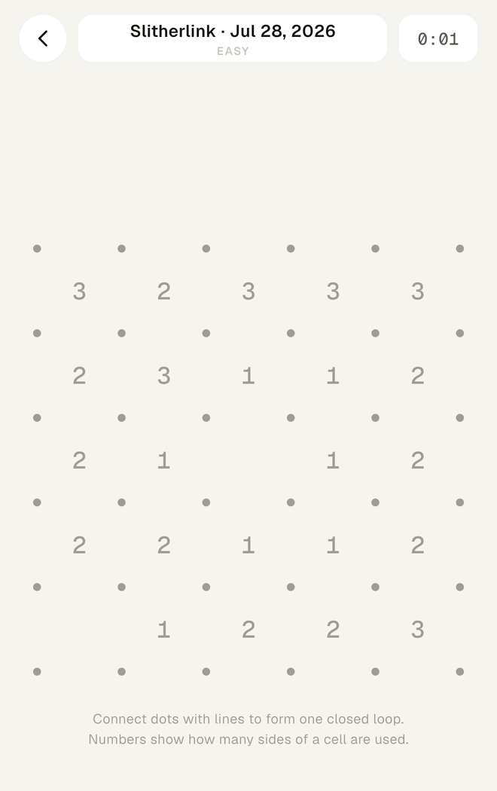
a. Every puzzle opens empty — just dots and clues. The timer starts on your first move, not when the board loads.
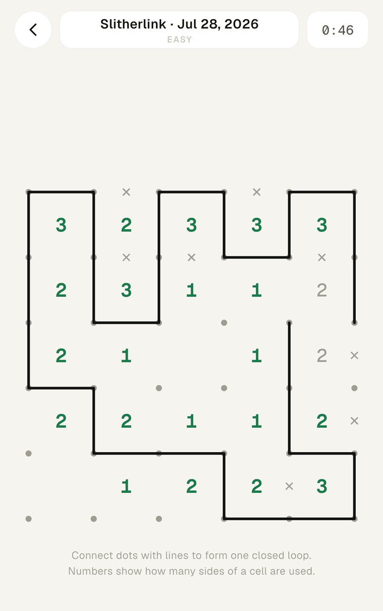
b. Tap the gap between two dots to place a line; tap the same gap again for a cross, and a third time to clear it. Keep your finger down and drag along a row to stamp that same state onto every edge you cross. Numbers turn green the moment they are exactly satisfied.
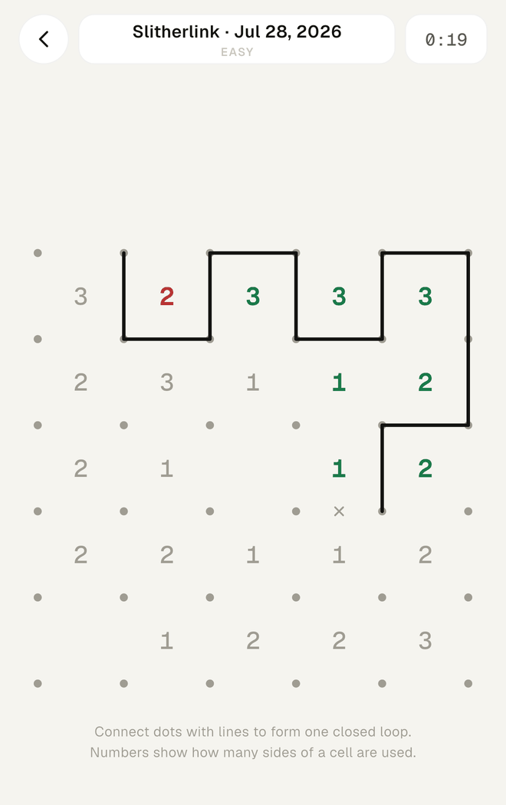
c. A clue turns red as soon as it has too many lines around it. Nothing is blocked and nothing is scolded — but red means a deduction went wrong somewhere upstream. Undo walks back one move at a time.
The tap cycle
Crosses are not decoration — they are how you record what the loop cannot do, and they are what turn the next move from a guess into a deduction.
Tips
Spend your first pass on 0s and 3s. Cross off all four edges of every 0 immediately. Then, wherever a 3 sits orthogonally next to a 0, the 3's three edges away from the 0 are all forced lines.
Two 3s touching diagonally are always a free pair of moves. Neither can route through the shared corner twice, so on each 3 the two edges furthest from that corner must be lines.
Read the dots, not just the cells. Any dot that already carries two lines is finished — cross off its remaining edges. That single habit uncovers most of the mid-game forcing moves, and it is why dragging crosses is worth the extra second.
Puzzle 02
Queens
One crown per row, per column, and per colour region — and no two crowns may touch.
Goal
Place exactly one queen in every row, every column and every colour region.
Board
A square grid carved into irregular colour regions, one region per row of the board.
Controls
Tap a cell to cycle it. Drag to sweep X marks across empty cells.
Typical solve
1–2 min on Easy
Rules
Every row holds exactly one queen.
Every column holds exactly one queen.
Every colour region holds exactly one queen, whatever shape or size that region is.
No two queens may touch — not side by side, and not diagonally. This is the rule that catches people out.
X marks are yours to place freely; they record eliminations and are never checked.
How to play
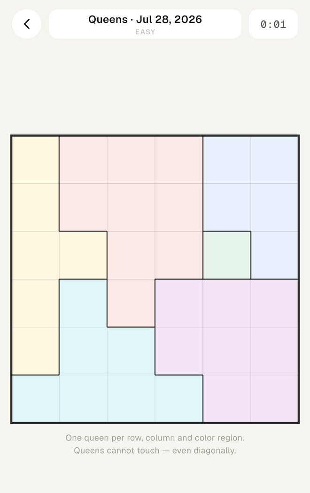
a. The colour regions are the puzzle. Read their shapes before you place anything — the awkward, narrow ones carry most of the information.
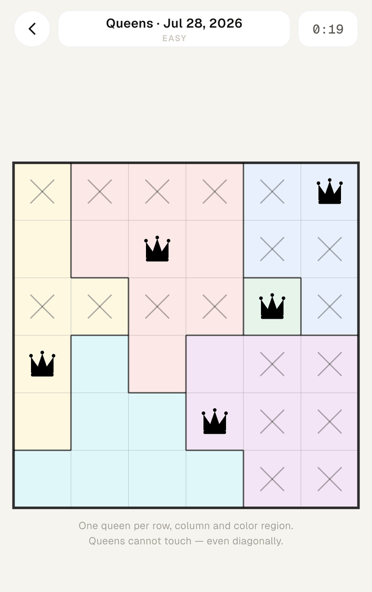
b. Tap an empty cell once for an X, again for a crown, and a third time to clear it. To eliminate a whole run at once, press and drag across the board — a drag only ever writes X marks on empty cells, so it can never knock out a crown you have already placed.
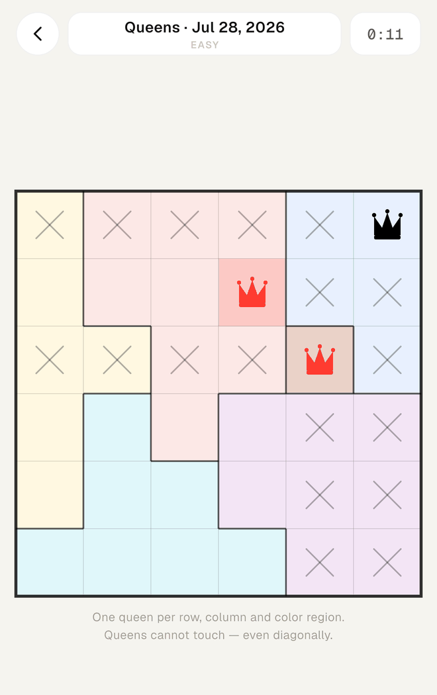
c. Queens that break a rule turn red, along with the cell behind them. Here two crowns are touching corner to corner — legal in every row and column, and still wrong.
The tap cycle
A drag never reaches the queen state. It only turns empty cells into X marks, which makes sweeping safe at speed.
Tips
Start with the region that spans the fewest lines. If a colour occupies cells in only one row, that row's queen belongs to it — so every other cell in that row can be X'd out at once, and often that alone cracks the board open.
Turn the argument around when you are stuck. Instead of asking which region a row belongs to, find a row whose remaining free cells all sit inside a single region: that region's queen is pinned to that row, and you can clear its cells from every other row.
Sweep immediately after every crown. A queen eliminates its row, its column, its whole region and all eight neighbours. Drag those X's in while the reasoning is fresh — otherwise you will re-derive the same eliminations three moves later and lose the time you were racing for.
Puzzle 03
Hashi
Bridge every island into one connected network, giving each exactly the number it asks for.
Goal
Connect the islands with bridges so every island has exactly as many bridges as its number, and the whole map forms one single network.
Board
Numbered islands on an open grid, connected only horizontally and vertically.
Controls
Tap the water between two islands to cycle the bridge count there.
Typical solve
1–3 min on Easy
Rules
Bridges run only horizontally or vertically, in a straight line between two islands.
At most two bridges may join the same pair of islands.
Bridges may not cross each other, and may not pass over an island.
Each island must end up with exactly as many bridge ends as its number.
When it is done, every island must be reachable from every other one — a perfectly numbered map that falls into two separate clusters is not a solution.
How to play
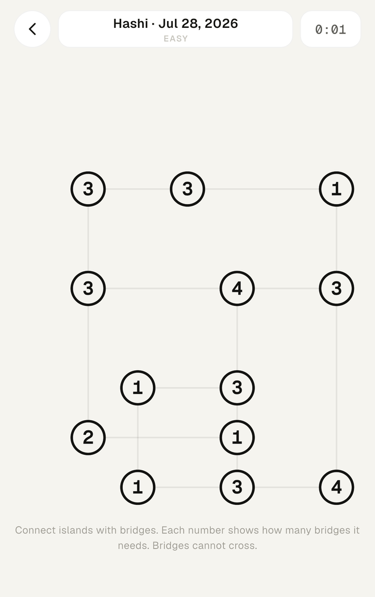
a. Faint guide lines show every pair that could be joined. The numbers say how many bridge ends each island needs.
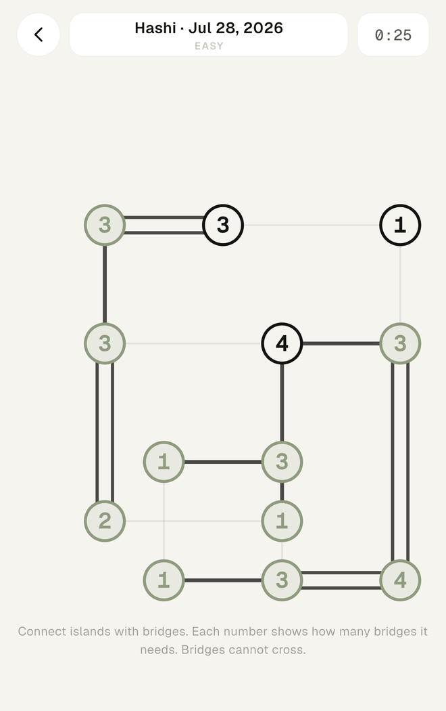
b. Tap the stretch of water between two islands: once for a single bridge, again for a double, a third time to remove it. Islands fill green the moment their number is satisfied, and the app simply refuses any tap that would overshoot a number or cross an existing bridge.
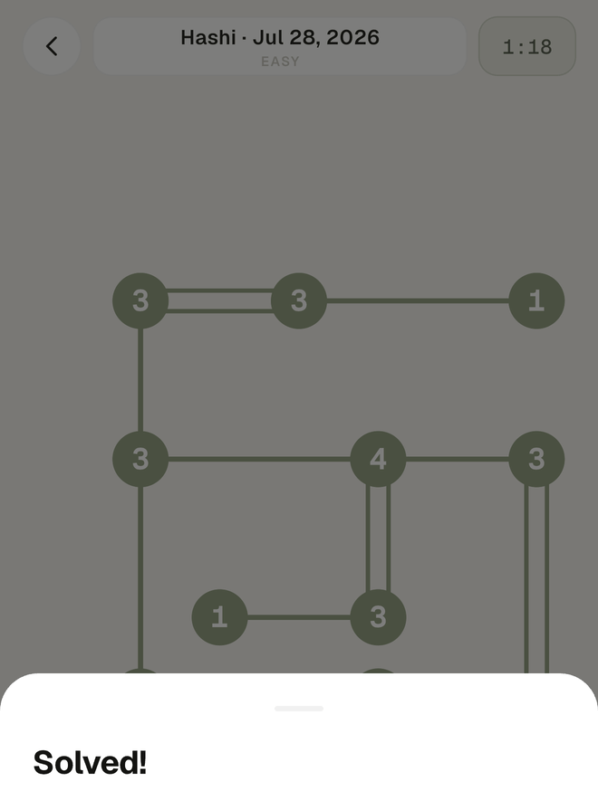
c. Complete the network and the board settles, dims, and hands you the result sheet — your time, today's rank and your streak.
The tap cycle
The tap target is the water between two islands, not the islands themselves — aim at the gap and the nearest legal link takes it.
Tips
Look for islands whose number is twice their options. A 4 with only two neighbours takes a double bridge in both directions; an 8 anywhere takes a double in all four. Those are free, and they usually cascade.
A 1 never links to another 1, and two 2s never double up with each other. Either move would seal that pair off from the rest of the map, and connectivity is a hard requirement — so those links can be ruled out before you build anything.
Let the refusals do work for you. Once an island turns green it accepts nothing more, and each bridge you lay also forbids every crossing. When a neighbour is left with only one legal direction, that bridge is forced — check the islands around each newly green one before hunting elsewhere.
Puzzle 04
Masyu
One loop through every pearl — white ones passed straight, black ones turned.
Goal
Draw a single closed loop that visits every pearl and respects what each colour demands.
Board
A grid of nodes with white (hollow) and black (filled) pearls sitting on some of them.
Controls
Drag between neighbouring nodes to draw. Drag back along a segment to erase it.
Typical solve
1–2 min on Easy
Rules
Draw one closed loop along the grid, moving only horizontally and vertically between neighbouring nodes.
The loop never crosses itself and never branches — each node it uses has exactly two segments.
The loop must pass through every pearl, white and black alike.
White pearl: the loop goes straight through it, and must turn on at least one of the two nodes immediately beside it.
Black pearl: the loop turns on it, and must continue straight for at least one more node on both sides of the turn.
Nodes with no pearl are free — the loop may go straight, turn, or skip them entirely.
How to play
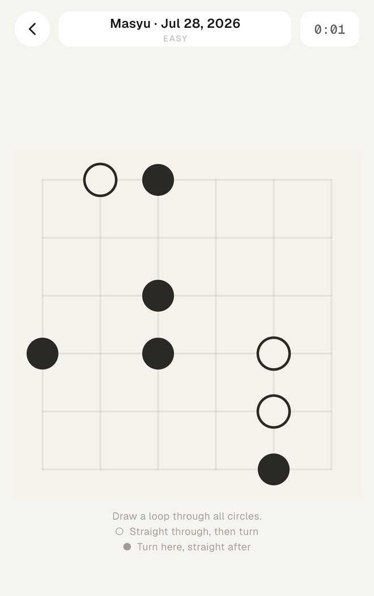
a. Hollow pearls are white, filled ones are black. The legend under the board restates both rules, so you never have to remember which is which.
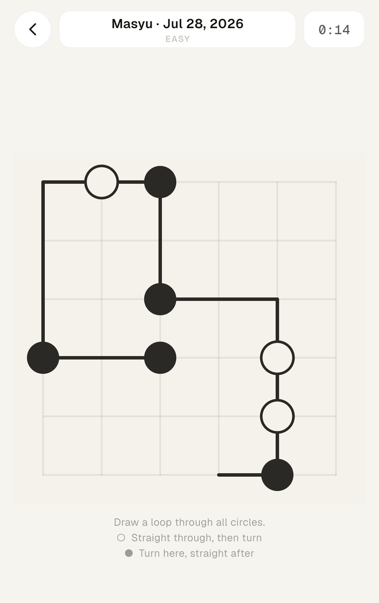
b. Press on a node and drag to a neighbour: the segment appears under your finger, and you can keep going to draw a whole run in one stroke. Retrace the way you came and the segments come back off — the stroke you started with doubles as the eraser.
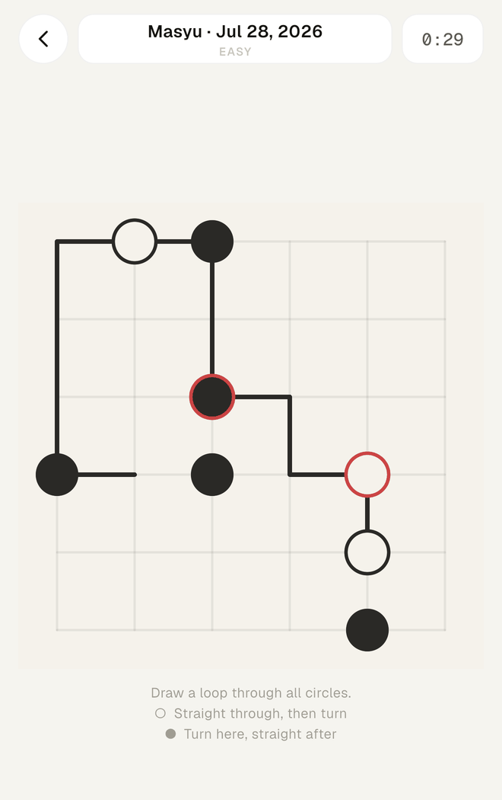
c. A pearl outlines itself in red the moment the path around it contradicts its rule — here a black pearl was passed straight through and a white one was turned on.
Drawing and erasing
A node can hold two segments and no more. If your drag stops dead, you have asked for a fork — which means one of the two segments already there is wrong.
Tips
Black pearls on or near the wall are the cheapest openings. A black pearl must turn and then run two nodes straight in both directions, so one on the edge — or one node in from it — can only turn along the border. That fixes both of its arms before you have drawn anything else.
Two black pearls side by side push each other apart. Neither can send its straight run through the other, so from each one the two nodes running away from its partner are forced.
A white pearl on the edge is decided the moment you see it. The loop must pass straight through it and cannot leave the grid, so its line runs along the wall — and then it has to turn on one side or the other, which usually settles the corner beside it too.
App tour
Inside Noren
Four tabs. One daily set, everything you have played before, where you stand, and who you are.
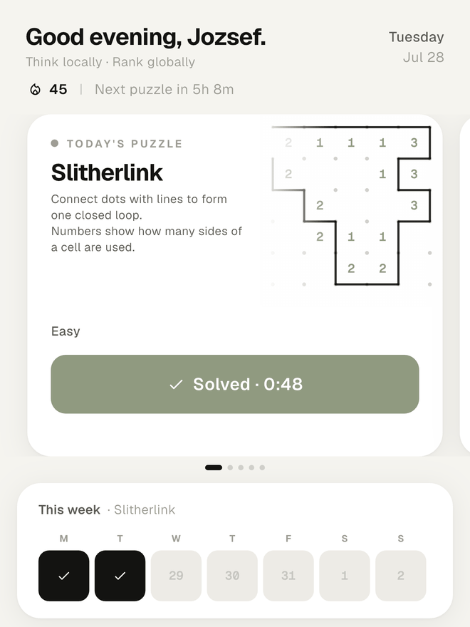
Today
One puzzle from each of the four games, every day, identical for everyone who plays — so the times on the leaderboard mean something. Swipe the card to move between the day's games; a countdown at the top tells you when the next set unlocks.
The week strip underneath is your streak. A day counts once you have solved it, and the strip is what you will be protecting after the first fortnight.
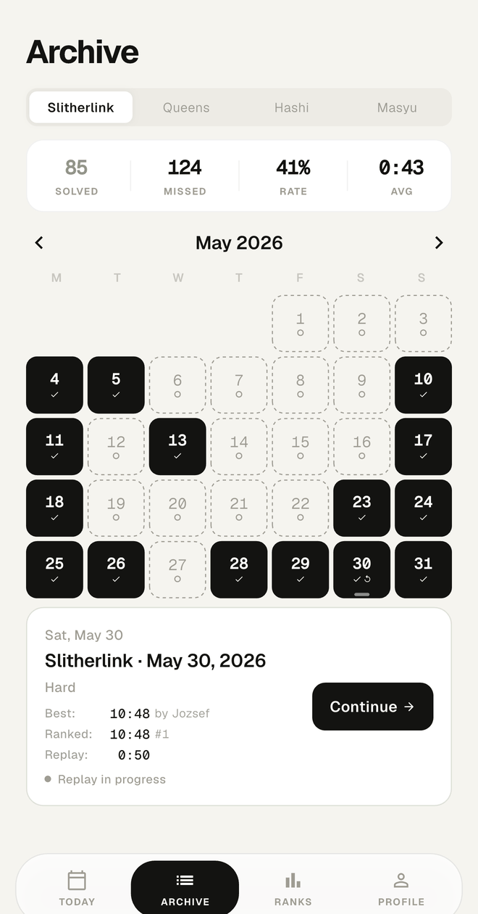
Archive
Nothing expires. Every past day stays playable, filtered by game, with solved days filled in and missed ones left open. The header keeps a running count of what you have solved, what you missed, your success rate and your average time.
The last seven days are free for everyone. Anything older than that is part of Noren Premium. Replaying a day you have already solved is timed separately, so your original result stays intact.
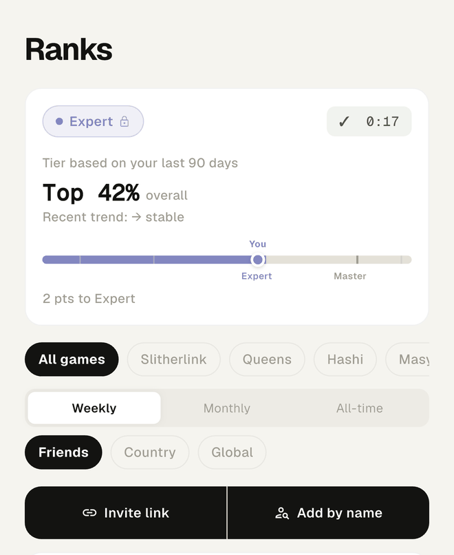
Ranks
Your tier is earned, not bought. It comes from your daily percentile across the last 90 days and climbs through six steps — Pre-Apprentice, Apprentice, Adept, Expert, Master, Grandmaster — each one a narrower slice of the field than the last. The card shows where you sit inside your current tier and how far the next one is.
Leaderboards below filter three ways at once: by game, by week, month or all time, and by friends, country or global.
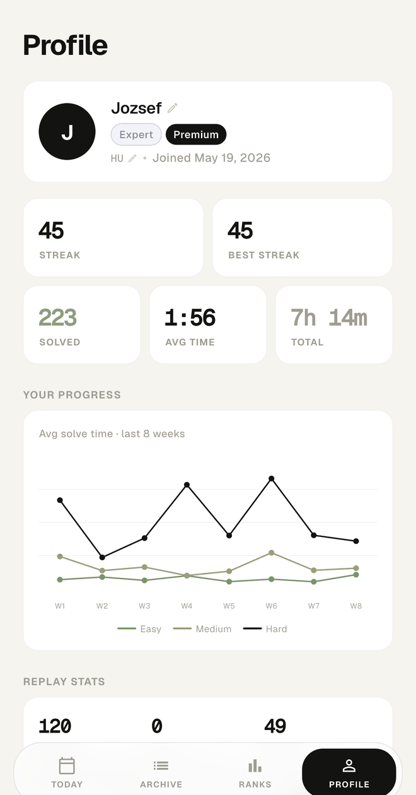
Profile
Streak, best streak, total solves, average time and hours played, plus a chart of your average solve time by difficulty over the last eight weeks — the honest way to see whether you are actually getting faster.
Replay statistics track your biggest improvements on puzzles you have returned to. Daily reminders, streak warnings, dark mode, haptics, sound and offline archive play are all set here.